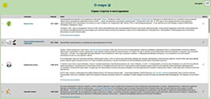
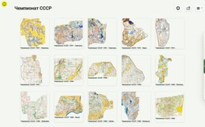
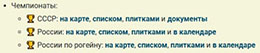
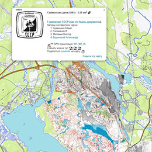

Общее описание
Помимо самих карт, O-Maps собирает сведения о соревнованиях - многодневках, сериях стартов, чемпионатах и кубках. Каждое соревнование зарегистрировано в каталоге под своим кодом (например, NA - Невский Азимут, KKP - ККП, WN - Белые Ночи). Список всех кодов можно посмотреть тут. По коду соревнования, переданному в параметре start, можно отфильтровать карты на карте и в сводных таблицах, старты в календаре и маршруты в таблице маршрутов.
Одно и то же соревнование можно посмотреть по-разному:
- наглядно на карте - на странице «Старты на карте»;
- списком карт - в сводной таблице с выбранным стартом;
- плитками - на странице соревнования;
- в календаре - все старты этого соревнования за все годы.
Таблица соревнований

Страница соревнования

- Календарь - все старты этого соревнования из календаря со ссылками на результаты, трансляции и отчёты;
- Карты - все карты соревнования в виде плиток, от новых к старым. Щелчок по плитке открывает карточку карты.
Соревнования по годам
Страница «Соревнования по годам» - это диаграмма, наглядно показывающая историю соревнований. Каждому соревнованию соответствует строка, каждому году - столбец. Планка в строке показывает годы, когда соревнование проводилось, а её толщина - количество стартовых дней в каждом году. Цветом различаются ориентирование и рогейн.
Над диаграммой расположены выпадающие списки:
- Тип соревнований - все, ориент или рогейн;
- Сортировка - по названию, количеству стартовых дней, году первого старта или количеству лет проведения;
- Масштаб толщины - крупный, средний или мелкий.
При наведении курсора на планку показывается подсказка с числом стартовых дней. Щелчок по году открывает календарь со стартами этого соревнования в выбранном году, а щелчок по названию - страницу соревнования. На узком экране диаграмма прокручивается по горизонтали.
Чемпионаты
 
- Чемпионаты СССР: на карте, списком, плитками и документы;
- Чемпионаты России: на карте, списком, плитками и в календаре;
- Чемпионаты России по рогейну: на карте, списком, плитками и в календаре.